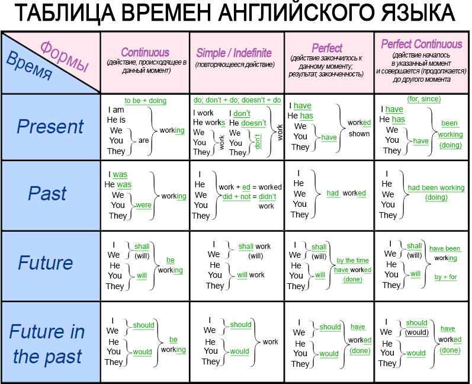
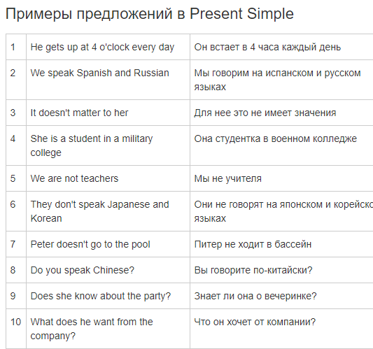
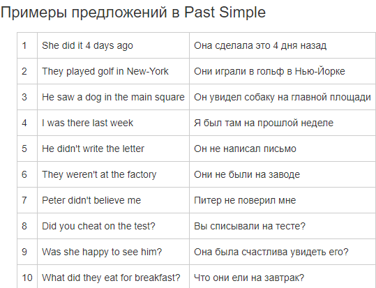
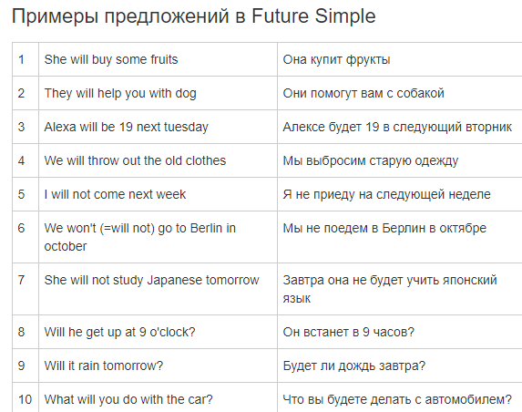

Present Simple - настоящее простое, Past Simple - прошедшее простое, Future Simple - будущее простое.
На данный момент нам понадобятся только эти времена Present Simple, Past Simple, Future Simple.
В Present Simple мы ставим подлежащее и смысловой глагол. В отрицаниях и вопросах добавляем глагол помощник to be. С местоимениями 3-го лица единственного числа (he, she, it) глагол помощник немного меняют свою форму, а если он отсутствует, то к основному глаголу добавляется буква s в конце.
В Past Simple мы ставим подлежащее, смысловой глагол во 2-ой форме. чтобы поставить его в эту форму нужно добавить окончание -ed. Если глагол неправильный, то смотрим его форму в таблице. В отрицаниях и вопросах ставим глагол помощник to be в прошедшем времени, и смысловой глагол оставляем без изменений.
В Future Simple мы ставим подлежащее, глагол помощник to be, и смыслововй глагол.
